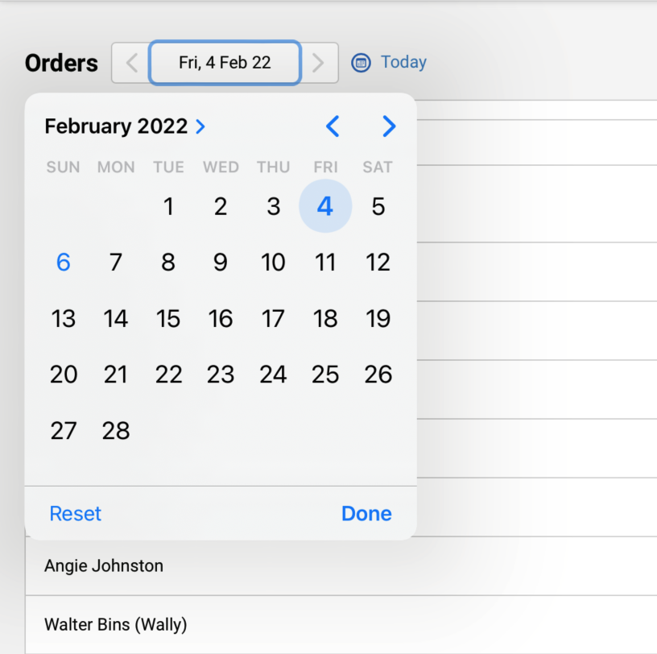
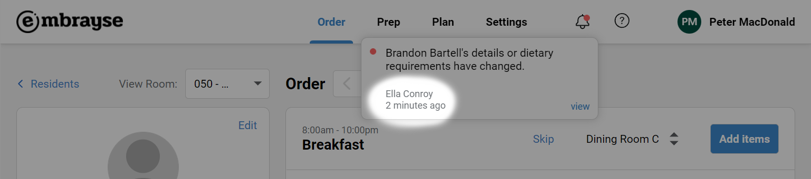

What’s new in release 2022.1
It has been a challenging start to 2022 for aged care, with the ever-evolving COVID situation. Here at Embrayse, we are committed to helping our partners in whatever way possible. This first release for the year includes important efficiency and experience improvements for the staff and residents, and many more improvements are on our roadmap for the year:
Auto-filled resident meal preferences
It is typical that a resident's preferences for a meal remains unchanged over time. For example if a resident prefers a large portion of chicken pasta, or does not want tomatoes in their salad, these choices will often be repeated whenever the items are on the menu.
Embrayse now remembers these choices, so the portion size and any notes you add to a meal choice will automatically be added when a resident picks the same meal in the future. This will provide noticeable time savings in order collection, as it reduces the amount of typing required on tablets. It should also help improve the accuracy of orders if, for some reason, the resident cannot be asked about their preference.
It is still important for staff to always double-check any notes on a meal choice, as it may no longer be relevant.
Printer settings
Administrators can now change docket printer settings, including two new settings to change the margins at the top and bottom of the dockets. Changing the margins may be helpful in hanging the dockets or placing them in trays without the text becoming obscured.
For more information about printers and printer configuration, please visit our help centre (more on that below).
Embrayse help centre
Embrayse help centre (https://help.embrayse.com) is your new stop for finding help and assistance for Embrayse, as well as giving us feedback. You can open the site directly from Embrayse using the new help icon in the header. There are two parts to the help centre:
- Knowledge Base: contains articles about advanced topics on configuring and getting the most out of Embrayse. We will be continuing to expand this part of the site.
- Support Tickets: you can submit support tickets or feedback through the site. You can directly submit the ticket, or additionally sign up with a password which will help you track your submitted tickets. Please keep in mind that we will continue to provide phone support during business hours. Our contact information are listed here.
Updated date picker
For ease of use and consistency, we have updated the date picker on all screens. They allow you to move back and forth using the arrow buttons, or use a calendar to select a date directly.
For iPad users, we recommend upgrading the device operating system to version 15.3 or higher for correct functioning of the calendar. Without the upgrade, the date can still be changed using the arrow buttons.
Resident change tracking
You can now see the name of the user who has made a change to a resident, in the notifications area. This will allow you to follow up with the relevant staff member with any questions or clarifications.
We will be looking at making further enhancements to the tracking, to make it clear which fields have changed. Stay tuned!
Other improvements and bug fixes
- PCS integration: Communities in PCS can now be explicitly mapped to Embrayse 'wings' in the settings area.
- Fixed: Adding items to an order sometimes causes the order item list to be rearranged.
- Fixed: Updating a resident sometimes causes their regular order items to be removed.